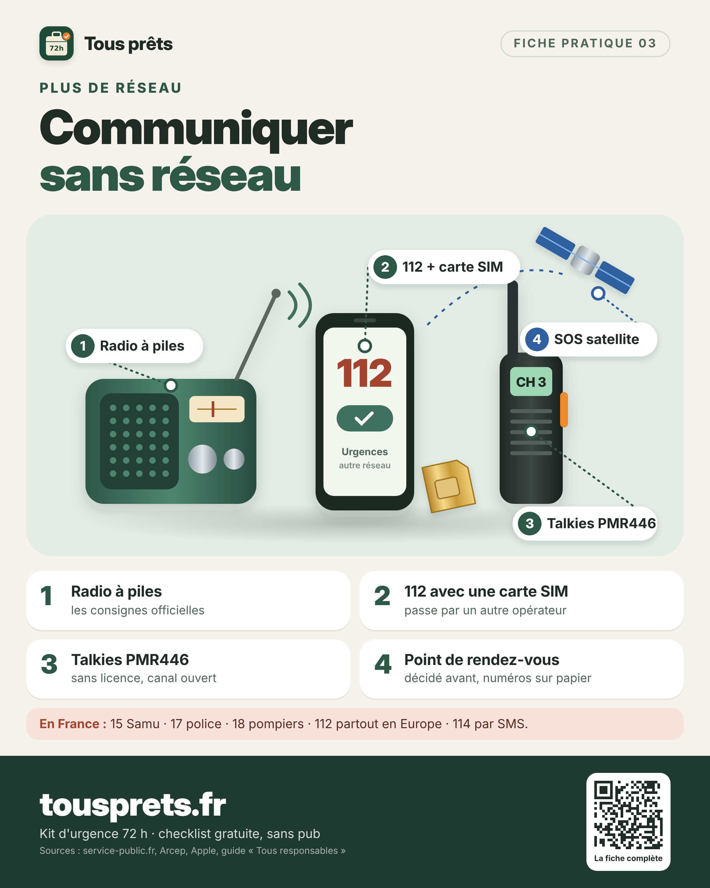
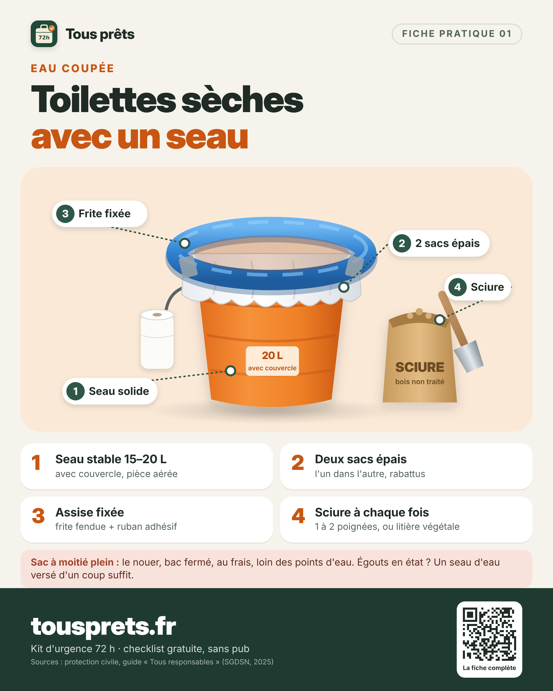
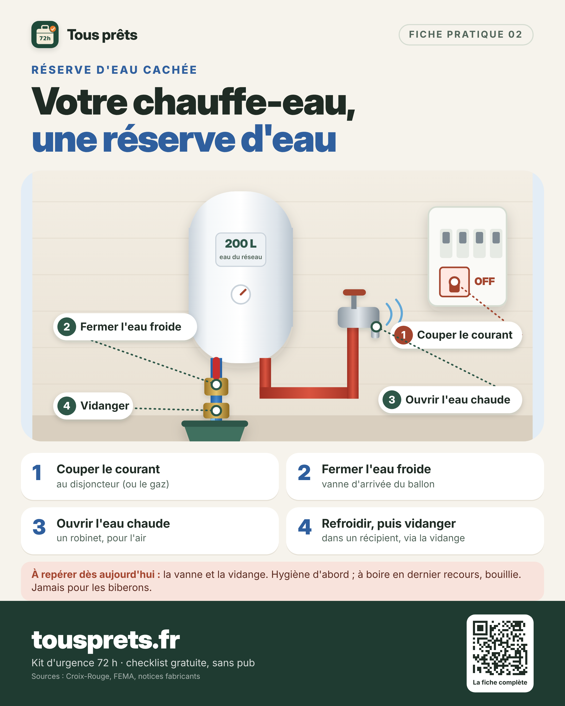
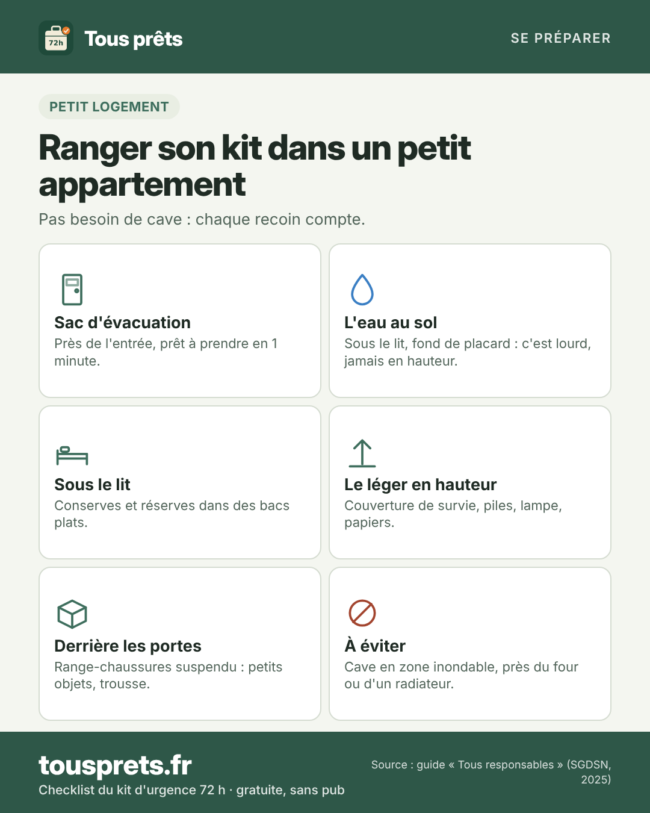

Kit d'urgence : les questions pratiques, des réponses claires
Les questions qu'on se pose vraiment quand on prépare son kit, et que les listes officielles ne détaillent pas : comment communiquer sans réseau, que faire des toilettes sans eau, où ranger tout ça dans un petit appartement. Des réponses courtes, vérifiées, sans dramatiser.
Plus de réseau, plus d'internet
Mon téléphone ne capte plus : comment être prévenu des consignes ?
Par la radio. Une radio à piles ou à manivelle capte la radio locale du service public (« ici », ex-France Bleu), qui relaie les consignes des autorités. Les sirènes et les messages par haut-parleur de la mairie restent aussi actifs. FR-Alert, lui, a besoin du réseau mobile. Voir la radio à piles.
Mon opérateur ne capte plus : puis-je quand même appeler le 112 ?
En France, les numéros directs restent le 15 (Samu), le 17 (police) et le 18 (pompiers) ; le 112 fonctionne partout en Europe. Oui, l'appel passe si un autre opérateur capte. Le téléphone emprunte automatiquement le réseau disponible pour un appel d'urgence, même sans forfait. Attention : en France, il faut une carte SIM dans le téléphone. Un vieux téléphone sans SIM ne joint pas le 112. S'il n'y a aucun réseau du tout, l'appel ne passe pas.


Les talkies-walkies sont-ils utiles ? Faut-il une licence ?
Les talkies PMR446 s'utilisent sans licence ni abonnement en France et en Europe, avec une puissance limitée à 0,5 W. Ils permettent de garder le contact dans un immeuble, une rue ou un quartier quand le réseau mobile tombe.
Portée réelle : les boîtes annoncent 5 à 10 km, mais en ville comptez plutôt quelques centaines de mètres à 1 km. Prévoyez des piles de rechange (l'autonomie baisse au froid) et convenez à l'avance d'un canal. Ce sont des canaux ouverts : n'y donnez pas d'informations sensibles (absence du logement, codes). Ils ne permettent pas de joindre les secours.
Peut-on contacter les secours par satellite ?
Oui avec certains téléphones : depuis décembre 2022, les iPhone 14 et plus récents peuvent envoyer un message aux secours par satellite en France, et certains Pixel récents le proposent selon le modèle : vérifiez dans les réglages de votre téléphone. C'est un dernier recours : composez d'abord le 112, et si l'appel ne passe pas, le téléphone propose le satellite. Il faut être dehors, ciel dégagé. Testez la démonstration dans les réglages.
Comment se retrouver en famille sans téléphone ?
Décidez maintenant d'un lieu de rassemblement près de chez vous et d'un second hors du quartier, et d'une personne contact qui centralise les nouvelles. Écrivez les numéros importants sur papier, dans le kit et dans chaque sac. Le guide « Tous responsables » demande de prévoir ces lieux et ces numéros dans son plan personnel.
Eau et hygiène
L'eau est coupée : comment faire avec les toilettes ?
Si les égouts fonctionnent (seule l'eau du robinet est coupée) : versez d'un coup un seau d'eau non potable (pluie, eau de bain) au fond de la cuvette pour déclencher la chasse, en restant près de la cuvette pour limiter les éclaboussures. Ne touchez pas à votre réserve d'eau potable.
Si les égouts sont hors service (inondation, consigne de la mairie) : n'utilisez plus les toilettes et passez aux toilettes sèches avec un seau, ci-dessous.
Comment faire des toilettes sèches avec un seau ?
- Un seau solide de 15 à 20 litres, avec couvercle, installé dans une pièce aérée (salle de bain, balcon couvert).
- Deux sacs poubelle épais glissés l'un dans l'autre, rabattus sur le bord du seau.
- Une assise : une frite de piscine fendue dans la longueur, posée sur le bord et fixée avec du ruban adhésif pour qu'elle ne glisse pas, ou un vieil abattant. Le seau doit être bien stable.
- Une couche de matière sèche au fond, puis 1 à 2 poignées après chaque passage : sciure de bois non traité, litière végétale, copeaux ou terre sèche. Elle absorbe et limite les odeurs.
- Séparer l'urine si possible (bouteille, second seau) : beaucoup moins d'odeur et un sac moins lourd.
- Changer le sac à moitié plein : le nouer, le mettre dans un contenant fermé, au frais et à l'écart du logement, des points d'eau et des potagers. Ne le jetez pas avec les ordures ménagères sans consigne : suivez celles de la mairie.
- Hygiène : gel hydroalcoolique à chaque passage, couvercle fermé entre deux utilisations. Le gel ne remplace pas le savon sur des mains sales : lavez-les à l'eau et au savon dès que possible.
À avoir dans le kit : un seau à couvercle, des sacs poubelle épais et des liens, un sac de litière végétale ou de sciure, du papier toilette, du gel hydroalcoolique.


Le chauffe-eau peut-il servir de réserve d'eau ?
Oui. Un chauffe-eau (ballon, cumulus) contient souvent 100 à 300 litres d'eau du réseau. Si l'eau du robinet est coupée, cette eau reste disponible. Encore faut-il savoir la récupérer : repérez dès aujourd'hui l'arrivée d'eau froide et l'endroit où se fait la vidange. Sur beaucoup de chauffe-eau, elle passe par le groupe de sécurité, souvent relié à l'évacuation : il faut pouvoir glisser un récipient dessous.
- Coupez l'alimentation : le disjoncteur du chauffe-eau (ou le gaz). Un chauffe-eau qui chauffe à vide s'abîme.
- Fermez la vanne d'arrivée d'eau froide du ballon.
- Ouvrez un robinet d'eau chaude dans le logement : l'air entre et l'eau peut sortir.
- Laissez refroidir plusieurs heures si possible : l'eau peut être brûlante.
- Vidangez dans un récipient par le groupe de sécurité (position vidange) ou par le robinet en bas du ballon, selon le modèle, en vérifiant d'abord qu'un récipient tient dessous. Refermez ensuite.
Peut-on la boire ? C'est l'eau du réseau, mais elle peut contenir du calcaire et des dépôts. Utilisez-la d'abord pour l'hygiène et la cuisine ; ne la buvez qu'en dernier recours, après l'avoir laissée reposer et fait bouillir. L'ébullition tue les microbes mais n'enlève pas une pollution chimique. Jamais pour les biberons : utilisez une eau en bouteille adaptée aux nourrissons.
Si les autorités annoncent que l'eau du robinet est polluée, fermez tout de suite la vanne d'arrivée générale du logement : l'eau propre du ballon ne sera pas remplacée par de l'eau polluée.
Gardez la notice de votre chauffe-eau, et faites-vous montrer les vannes par un plombier lors d'un entretien si vous avez un doute.


Comment se laver sans eau courante ?
Lingettes, gel hydroalcoolique pour les mains, et un gant avec un peu d'eau pour le reste. La réserve de 6 litres par personne sert à boire : prévoyez de l'eau en plus pour l'hygiène si vous avez la place. Voir combien d'eau stocker.
Filtre à eau ou pastilles : faut-il en avoir ?
La priorité, ce sont les bouteilles d'eau. Le guide officiel prévoit les pastilles de décontamination en dernier recours. Un filtre de randonnée arrête une partie des microbes mais pas les produits chimiques : après une inondation, l'eau peut être polluée par des hydrocarbures ou des produits ménagers. Suivez les consignes de la mairie avant de boire l'eau du robinet ou une eau filtrée.
Rangement et achats
Je vis dans un petit appartement : où ranger le kit ?
- Le sac d'évacuation près de l'entrée ou dans le placard le plus proche de la porte.
- L'eau au sol, à l'abri de la lumière : sous le lit, au fond d'un placard. C'est lourd, ne la mettez pas en hauteur.
- Les conserves sous le lit, dans un bac.
- Le léger (couverture de survie, piles, lampe, papiers) en hauteur ou dans un range-chaussures à suspendre derrière une porte.
- Évitez la cave si votre logement est en zone inondable, et les endroits chauds (près du four, du radiateur).
Voir aussi le kit selon votre logement.


Quels petits objets pas chers oublie-t-on souvent ?
- Un sifflet : pour signaler sa présence sans s'épuiser à crier.
- Du ruban adhésif solide : réparer, colmater, étiqueter.
- Des sacs poubelle épais : toilettes de secours, imperméable, protection des papiers.
- Une couverture de survie (citée par le guide officiel).
- Des gants de travail et un poncho de pluie.
- Du gel hydroalcoolique.
- Un couteau multifonction et un ouvre-boîte (cités par le guide).
- Des piles au bon format pour la lampe et la radio.
La plupart se trouvent pour quelques euros en grande surface. Voir le kit pas cher.


Faut-il prévoir plus de 72 heures ?
Le guide français demande 72 heures, la durée pendant laquelle les secours peuvent être débordés. D'autres pays visent plus long : la Suède, la Norvège ou l'Estonie demandent environ une semaine. Commencez par 72 heures bien faites, puis élargissez petit à petit en achetant un peu plus de ce que vous mangez déjà.
Et si le paiement par carte ne fonctionne plus ?
Sans électricité ou sans réseau, les terminaux de paiement et les distributeurs peuvent s'arrêter. Le guide prévoit de l'argent liquide dans le kit : gardez de petites coupures et de la monnaie, assez pour quelques jours de courses essentielles.
Rumeurs et contenus alarmistes
Je vois des vidéos qui annoncent des pannes géantes : faut-il s'inquiéter ?
Beaucoup de contenus sur les réseaux sociaux sont alarmistes, parfois générés par IA, et servent souvent à vendre du matériel. Se préparer n'a rien à voir avec la panique : un kit de 72 heures suffit à faire face aux situations les plus courantes (tempête, inondation, coupure). Fiez-vous aux sources officielles : info.gouv.fr/risques, votre préfecture, votre mairie. Voir nos sources.